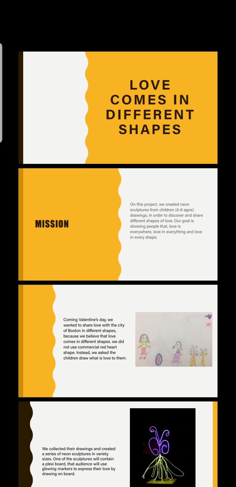
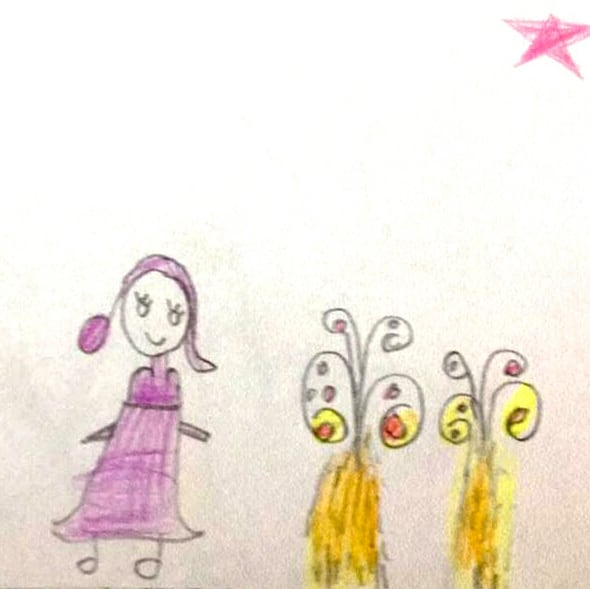
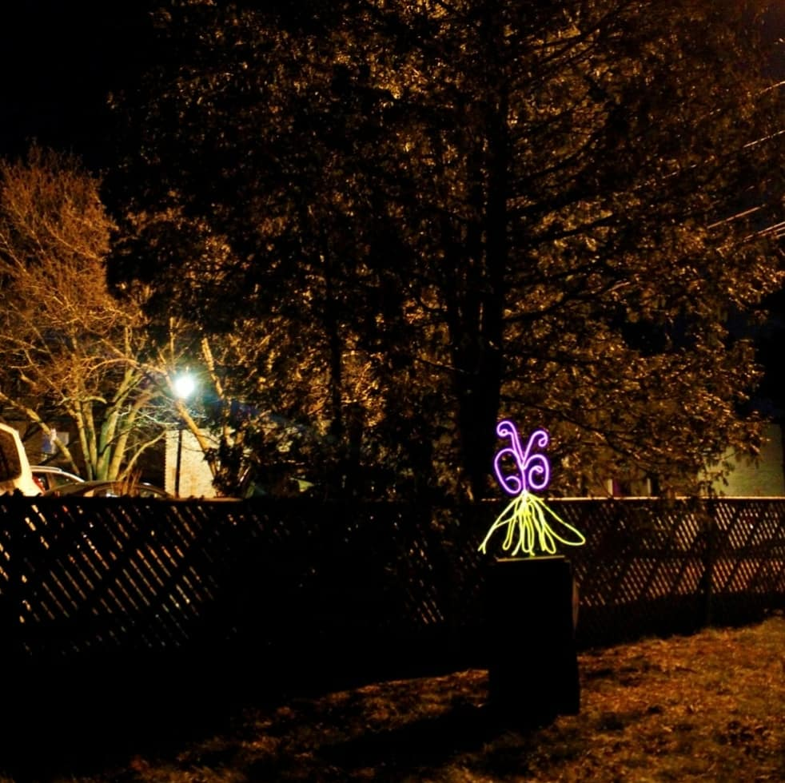
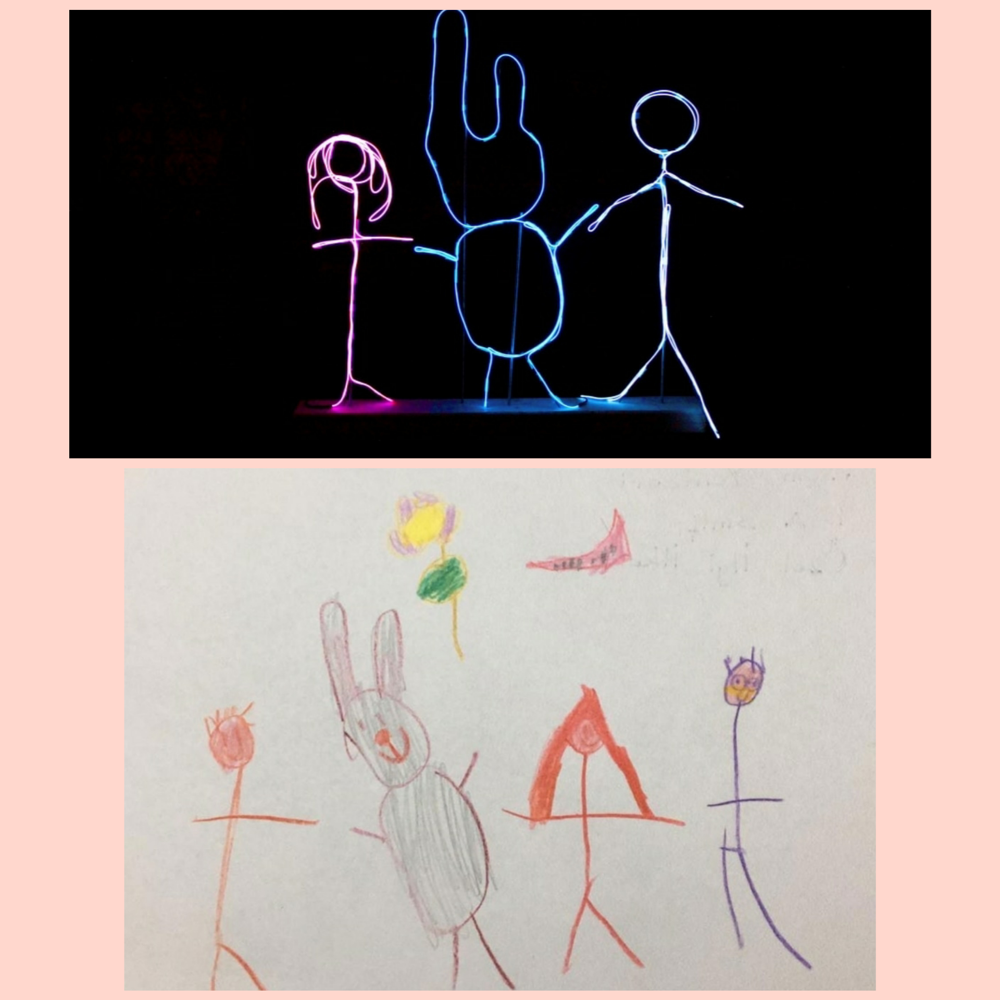
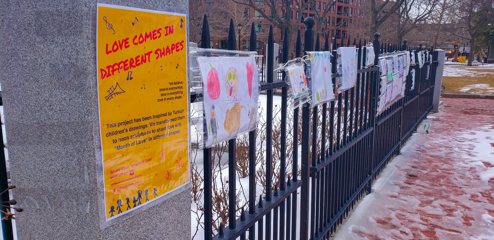
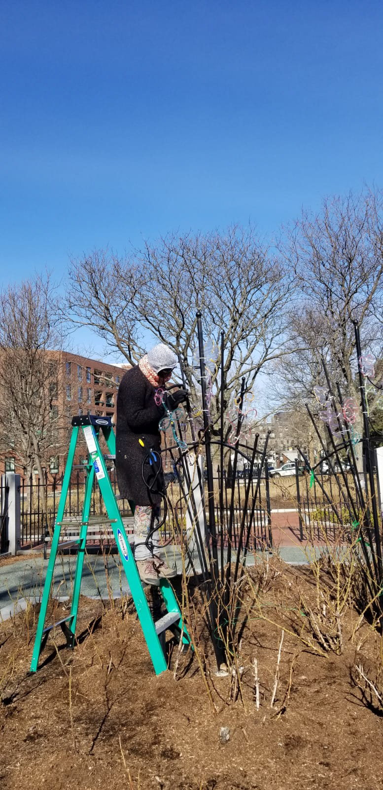
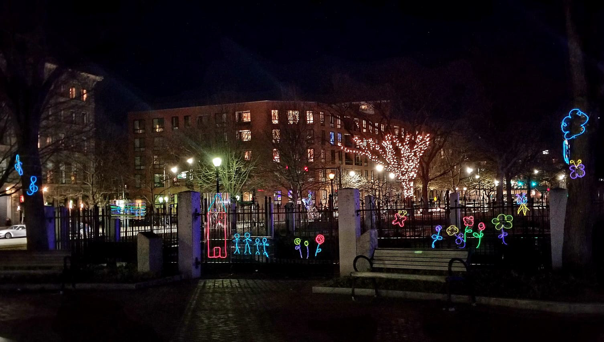

Boston, Massachusetts · February 2019
Community-Engaged Public Art · Light Installation
Love Comes in Different Shapes began with drawings created by young children at my niece’s school in Türkiye. The children were invited to draw what love looked like to them, moving beyond the conventional heart as a universal symbol of love.
Selected drawings were then translated into illuminated sculptural forms and installed in public space in Boston. By carrying the children’s imagery from Türkiye into the city, the project created a connection across cultures through a visual language that did not depend on words.
The installation brought together drawing, light and public participation around a simple idea: love can be found everywhere, in everything and in many different shapes.






Video Documentation